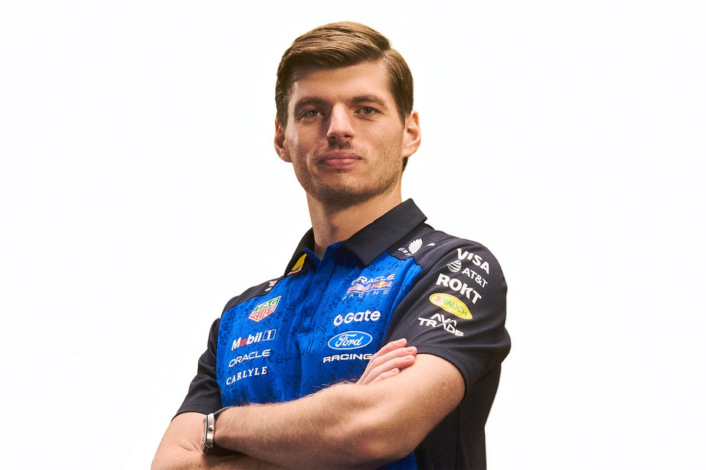
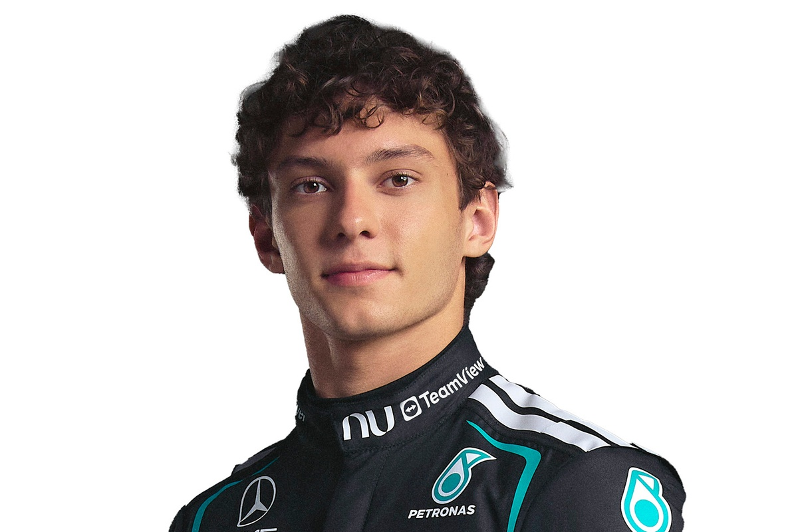

Pilotos
La parrilla de la Fórmula 1 tiene 22 pilotos, dos por cada una de las 11 escuderías. Conviven veteranos como Fernando Alonso y Lewis Hamilton con jóvenes como Kimi Antonelli, y también hay figuras sudamericanas como Franco Colapinto. En cada carrera suman puntos los diez primeros, desde 25 para el ganador, y quien acumula más puntos al final de la temporada es campeón del mundo.
Max Verstappen

- Nombre completo: Max Emilian Verstappen
- Nacionalidad: Neerlandesa
- Fecha de nacimiento: 30 de septiembre de 1997
- Número: 3
- Equipo: Red Bull Racing
- Posición: Piloto de Fórmula 1
Max Verstappen es uno de los pilotos más destacados de la Fórmula 1 moderna. Debutó en la categoría en 2015 con Toro Rosso cuando tenía solamente 17 años. En 2016 consiguió su primera victoria en el Gran Premio de España, convirtiéndose en el piloto más joven en ganar una carrera de Fórmula 1.
Con Red Bull Racing logró varios campeonatos mundiales y se destacó por su gran velocidad, agresividad para adelantar y capacidad para mantener un ritmo muy alto durante las carreras.
Lewis Hamilton

- Nombre completo: Lewis Carl Davidson Hamilton
- Nacionalidad: Británica
- Fecha de nacimiento: 7 de enero de 1985
- Número: 44
- Equipo: Scuderia Ferrari
- Posición: Piloto de Fórmula 1
Lewis Hamilton es uno de los pilotos más exitosos de la historia de la Fórmula 1. Debutó en 2007 con McLaren y consiguió su primer campeonato mundial en 2008. Posteriormente, logró numerosos títulos junto a Mercedes y se convirtió en una de las figuras más importantes de la categoría.
Es reconocido por su velocidad, especialmente en clasificación, su experiencia y su capacidad para competir durante muchas temporadas al más alto nivel. En 2025 comenzó una nueva etapa de su carrera al incorporarse a Ferrari.
Kimi Antonelli

- Nombre completo: Andrea Kimi Antonelli
- Nacionalidad: Italiana
- Fecha de nacimiento: 25 de agosto de 2006
- Número: 12
- Equipo: Mercedes-AMG Petronas F1 Team
- Posición: Piloto de Fórmula 1
Andrea Kimi Antonelli es un piloto italiano que llegó a la Fórmula 1 con Mercedes en 2025. Es considerado una de las grandes promesas del automovilismo y comenzó su carrera en el karting desde muy joven. Antes de llegar a la F1, compitió en categorías de formación y consiguió importantes resultados.
Antonelli se caracteriza por su velocidad, capacidad de adaptación y buen rendimiento en clasificación. Su llegada a Mercedes marcó el comienzo de una nueva etapa en su carrera, compartiendo equipo con George Russell.